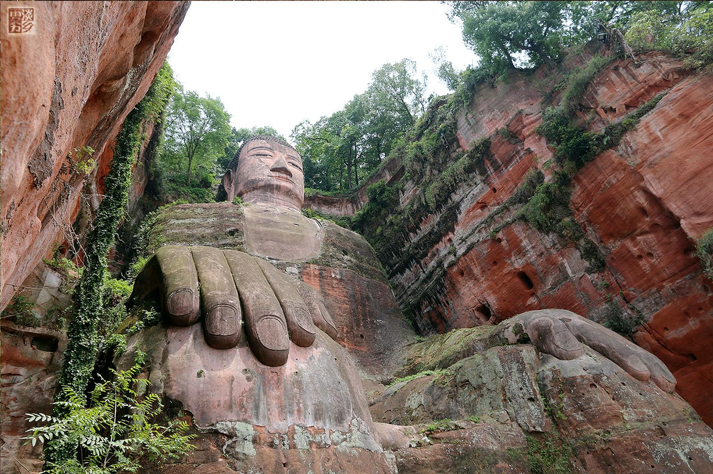

景点名称：乐山大佛
推荐指数：★★★★
简介：乐山大佛又名凌云大佛，位于四川省乐山市南岷江东岸凌云寺侧，濒大渡河、青衣江和岷江三江汇流处。大佛为弥勒佛坐像，通高71米，是中国最大的一尊摩崖石刻造像。乐山大佛开凿于唐代开元元年(713年)，完成于贞元十九年(803年)，历时约九十年。乐山大佛和凌云山、乌尤山、巨形卧佛等景点组成的乐山大佛景区属于国家5A级旅游景区。2019年4月1日，历时近半年的四川乐山大佛残损区域抢救性保护前期研究及勘测工作结束，乐山大佛正式“出关”，景区的九曲栈道和佛脚观光平台重新开放。